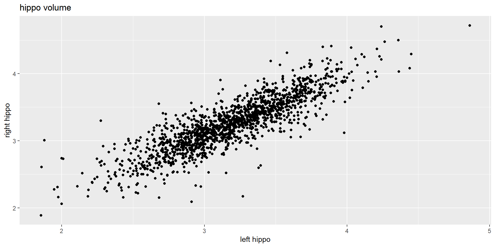
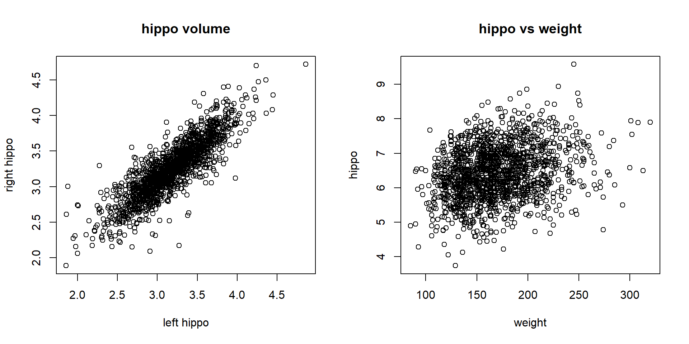
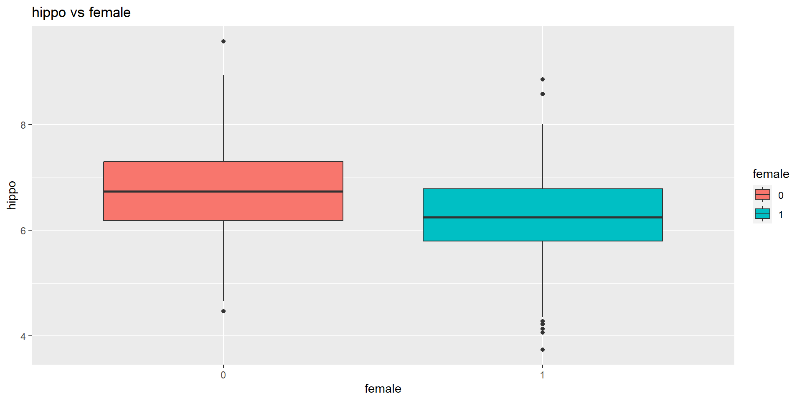
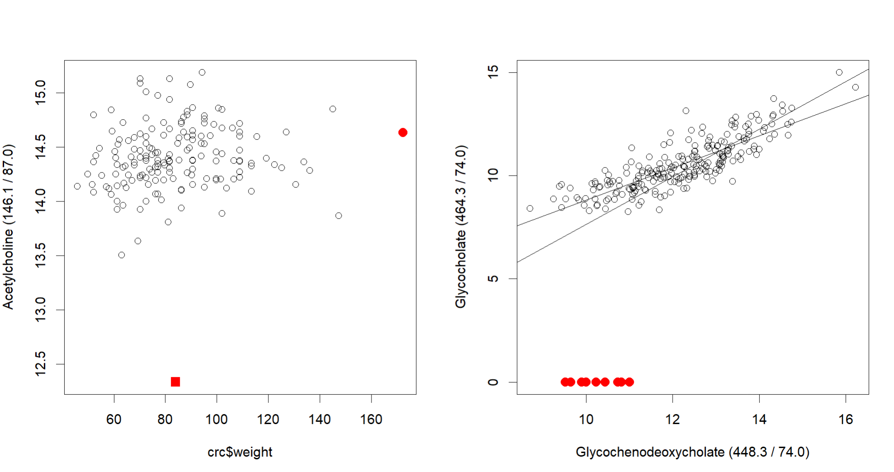

Day 4 - Linear Regression
2024-07-18
Load Libraries
Read Data
Code
alzheimer_data <- read.csv('data/alzheimer_data.csv') %>%
select(id, diagnosis, age, educ, female, height, weight, lhippo, rhippo) %>%
mutate(diagnosis = as.factor(diagnosis), female = as.factor(female))
alzheimer_healthy <- read.csv('data/alzheimer_data.csv') %>%
select(id, diagnosis, age, educ, female, height, weight, lhippo, rhippo) %>%
mutate(diagnosis = as.factor(diagnosis), female = as.factor(female)) %>% filter(diagnosis==0)
#define a new variable
#note: today we use the sum as the total hippocampal volume
alzheimer_healthy$hippo = alzheimer_healthy$lhippo + alzheimer_healthy$rhippo
#define the subset of older (>35) healthy subjects
alzheimer_healthy_old = alzheimer_healthy %>% filter(age>35)
#old-fashioned way to do the same thing
#alzheimer_healthy_old = alzheimer_healthy[alzheimer_healthy$age >35,]Introduction
Review: Example 6 of Day 3
Research Question: Is hippocampus volume correlated with age in healthy adults?
Null Hypothesis: hippocampus volume and age are not correlated.
Alternative Hypothesis: hippocampus volume and age are not correlated.
\[H_0: \rho=0 \mbox{ vs } H_1: \rho\not=0\]
- Method: correlation test, more general, linear regression.
Linear Relationship
- The relationship is roughly (negatively) linear except for age <35.
Example: left vs right hippocampus
Correlation and Linear Regression
Correlation vs Linear Regression
- Correlation is a measure of the strength of linear relationship between two continuous variables.
[1] "correlation between left and right hippo volume"[1] 0.8626165[1] "correlation between weight and hippo volume"[1] 0.270462Why do we need linear regression
Interpretation: What is the expected decrease in hippocampal volume with a one-year increase in age?
Account for covariates using multiple linear regression. Adjust for covariates is particularly important in observational studies.
- E.g., association between obesity and gender might be dependent on other factors, such as ethnicity, countries, income, etc
Prediction: What is the predicted hippocampal volume for a 45-yar old healthy woman?
Linear Regression
The Response Variable
In a linear model, the response variable is the variable that we are trying to predict or explain.
A response variable is also known as a dependent variable.
It is the outcome or the variable that is being studied and modeled as a function of one or more explanatory (independent) variables.
We often use \(y\) to represent the response variable.
Simple Linear Regression (SLM)
Simple Linear Regression
Simple linear regression is the regression model with only one explanatory variable.
It can be used to assess the linear relationship between two variables. Example, age and hippocampal volume in healthy older (35+) subjects

The Model
- The linear model is represented as:
\[y=\beta_0 + \beta_1 x + \epsilon\]
\(y\): Response variable (dependent variable)
\(x\): Explanatory variable (independent variable)
\(\beta_0\): Intercept (constant term)
\(\beta_1\): Slope (rate of change)
\(\epsilon\): Error term (residuals)
It is also common to add subject indices \[y_i=\beta_0 + \beta_1 x_i + \epsilon_i, i=1, \cdots, n\]
Model Assumptions
- \(y_i=\beta_0 + \beta_1 x_i + \epsilon_i, i=1, \cdots, n\)
- \(E(\epsilon_i)=0\)
- The \(n\) observations are independent
- Reasonably large \(n\) or normality assumption: \(\epsilon_i \sim N(0, \sigma^2)\)
Computation
Least Squares Estimate: looking for \(\hat\beta_0\) and \(\hat\beta_1\) that minimizes \(\sum_{i=1}^n (y_i - \beta_0 -\beta_1 x_i)^2\).
Other notations: \[b_0=\hat \beta_0, b_1=\hat\beta_1\]
The process of finding \((b_0, b_1)\) involves solving two linear equations jointly.
- \(b_0=\hat\beta_0=\bar{y}-b_1\bar{x}\)
- \(b_1=\hat\beta_1=\dfrac{\sum_{i=1}^{n}(x_i-\bar{x})(y_i- \bar{y})}{\sum_{i=1}^{n}(x_i-\bar{x})^2}\)
Interpretation of Simple Linear Regression
Example 1: hippo vs age
Example 1: interpret the Coefficients
- The fitted line is \(hippo = 8.29 - 0.027 \times age\)
- Interpretation of \(b_0=8.29\)
- mathematically, it is the estimated hippocampal value for a person at age 0.
- statistically, this interpretation involves extrapolation, which should be avoided. Rational:
- The linear trend we observed is for healthy subjects who are 35 or older.
- It is dangerous to assume that the same linear trend holds at around age 0.
- Interpretation of \(b_1= - 0.027\): for each added year, the hippocampal size decreased by 0.027 (cm\(^3\)).
Residuals
- \(e_i = y_i - \hat y_i\) where \(\hat y_i = \hat\beta_0 + \hat \beta_1 x_i\)
- Residual sum of squares (RSS): \(RSS=\sum_{i=1}^n e_i^2 = \sum_{i=1}^n (y_i -\hat y_i)^2\)
- An unbiased estimate of \(\sigma^2\) is \(s^2\): \[s^2= \frac{RSS}{n-2}\]
Standard Error and Confidence Interval
- The standard error of \(\hat\beta_1\) is \[se(\hat \beta_1)=\frac{\sqrt{s^2}}{\sqrt{\sum (x_i - \bar{x})^2}}\]
- A \(100(1-\alpha)\%\) confidence interval for \(\beta_1\) is \[\hat\beta_1 \pm t_{\alpha / 2, n - 2} se(\hat\beta_1)\]
t and p-value
Call:
lm(formula = hippo ~ age, data = alzheimer_healthy_old)
Residuals:
Min 1Q Median 3Q Max
-2.64965 -0.48857 -0.01641 0.48528 2.73487
Coefficients:
Estimate Std. Error t value Pr(>|t|)
(Intercept) 8.292520 0.118318 70.09 <2e-16 ***
age -0.027326 0.001712 -15.96 <2e-16 ***
---
Signif. codes: 0 '***' 0.001 '**' 0.01 '*' 0.05 '.' 0.1 ' ' 1
Residual standard error: 0.7157 on 1507 degrees of freedom
Multiple R-squared: 0.1446, Adjusted R-squared: 0.1441
F-statistic: 254.8 on 1 and 1507 DF, p-value: < 2.2e-16- The estimated slope (\(b_1\)) is -0.027, its standard error is 0.001712, and the p-value is \(<2e-16\); the linear relationship is significant at level 0.05.
Confidence Interval
2.5 % 97.5 %
(Intercept) 8.06043571 8.52460464
age -0.03068437 -0.02396827- The estimated slope (\(b_1\)) is -0.027.
- A 95% confidence interval is (-0.031, -0.024).
Estimation vs Prediction
- Question 1: What is the estimated mean hippocampal volume for 45-year-old women?
fit lwr upr
1 7.062836 6.976741 7.14893- Question 2: What is the predicted hippocampal volume for a 45-year-old woman?
fit lwr upr
1 7.062836 5.656232 8.46944- Why is the prediction interval wider than the estimation interval?
Example 2: A Binary X
- Now, consider the relationship between hippocampal volume and gender (the ``female``` variable in the data)
Boxplots by gender are better
Results and Interpretation
Estimate Std. Error t value Pr(>|t|)
(Intercept) 6.7482841 0.03246860 207.84031 0.000000e+00
female1 -0.4887882 0.04004538 -12.20586 9.608293e-33The intercept \(b_0=6.7482841\) is the estimated hippocampal volume for men (female=0)
The slope \(b_1=-0.4887882\) is the estimated difference between women and men in hippocampal volume
Let’s verify this using two-sample t-test
Two Sample t-test
data: hippo by female
t = 12.206, df = 1507, p-value < 2.2e-16
alternative hypothesis: true difference in means between group 0 and group 1 is not equal to 0
95 percent confidence interval:
0.4102376 0.5673388
sample estimates:
mean in group 0 mean in group 1
6.748284 6.259496 Multiple Linear Regression
Motivating Example
- Are healthy men and women differ in hippocampus volume?
- We just found that the difference is significant at level 0.05.
Can the difference be explained by height?
- Men have larger hippocampus volume
The adjusted difference
Estimate Std. Error t value Pr(>|t|)
(Intercept) 1.89654324 0.461747246 4.107319 4.217921e-05
height 0.07018857 0.006664539 10.531647 4.483407e-25
female1 -0.10245553 0.053294124 -1.922454 5.473704e-02The adjusted difference between men and women
- has a much smaller difference
- is less significant
Linear Models Are a Unified Tool
Conduct ANOVA Using linear regression
- We have seen how to use linear regression to perform a two-sample t-test
- Linear regression can also be used for ANOVA
- ANOVA using the
aovfunction
Conduct ANOVA Using linear regression
- ANOVA using two functions:
lmandanova
Estimate Std. Error t value Pr(>|t|)
(Intercept) 3.1814811 0.01151519 276.28564 0.000000e+00
diagnosis1 -0.2967987 0.02155047 -13.77226 9.370620e-42
diagnosis2 -0.4600909 0.02237019 -20.56714 1.965467e-87Analysis of Variance Table
Response: lhippo
Df Sum Sq Mean Sq F value Pr(>F)
diagnosis 2 100.54 50.268 247.13 < 2.2e-16 ***
Residuals 2697 548.59 0.203
---
Signif. codes: 0 '***' 0.001 '**' 0.01 '*' 0.05 '.' 0.1 ' ' 1Advanced Topics
Outliers
Outliers
Outliers are points that do not follow the general pattern of the majority of the data.
Leverage points are also called x-outliers.
Influential Outliers: These are data points that, when removed, lead to a significant change in the regression model. They can drastically affect the slope and intercept of the regression line.
Residuals (\(e_i=y_i - \hat y_i, i=1, \cdots, n\)) and their standardized versions are often used to visually inspect assumptions.
Outliers often have large residuals. Residual plots can be used to visually detect these outliers. An observation with a residual significantly larger or smaller than the other residuals may be an outlier.
Outliers: Examples
- Suggestions: check and inform, do not delete them automatically
Model Diagnostics
- Linearity: The relationship between predictors and response is linear. Violation seen when residuals display a systematic pattern.
- Independence: The residuals are independent. Violation seen when residuals display trends over time or space.
- Homoscedasticity: The variance of the residuals is constant. Violation seen when residuals show a “funnel” shape pattern.
- Normality: The residuals are normally distributed. Violation seen when residuals don’t follow a bell-shaped pattern in a histogram or a straight line on a Q-Q plot.
Interactions
A Model with Interactions
- Example: \[y=\beta_0 + \beta_{age} age + \beta_f f + \beta_{age_f} age\times f + \epsilon\] where \(f\) means female.
Estimate Std. Error t value Pr(>|t|)
(Intercept) 4.532690854 0.103765046 43.682252 6.870408e-270
age -0.017258406 0.001489018 -11.590461 8.150250e-30
female1 -0.587112896 0.125420697 -4.681148 3.109245e-06
age:female1 0.004712371 0.001807027 2.607803 9.202664e-03Data Visualization

The fitted lines
What are the two fitted lines?
Female: \(\hat \beta_0 + \hat \beta_{age} age + \hat \beta_f \times 1 + \hat\beta_{age\times f} (age\times 1)\), which can be rewritten to:
\[(\hat \beta_0 + \hat \beta_f) + (\hat \beta_{age} age + \hat\beta_{age\times f}) age.\]
- Male, similarly, the fitted line is \[\hat \beta_0 + \hat \beta_{age} age \]
The interaction coefficient
The two groups have different slopes if and only if \(\hat\beta_{age\times f} \not = 0\).
In other words, \(\hat\beta_{age\times f}\) is the estimated difference in the slope of age for females vs for males.
Back to the problem, do men and women shrink brain in the same speed?
Interpret Interactions
Estimate Std. Error t value Pr(>|t|)
(Intercept) 4.532690854 0.103765046 43.682252 6.870408e-270
age -0.017258406 0.001489018 -11.590461 8.150250e-30
female1 -0.587112896 0.125420697 -4.681148 3.109245e-06
age:female1 0.004712371 0.001807027 2.607803 9.202664e-03- The estimated brain shrinking speed for men is 0.017cc per year.
- The estimated brain shrinking speed for women is \(|-0.0172+0.0047|\approx 0.013\)cc per year.
- The result about the interaction item indicates that the difference in brain shrinking speed between men and women is 0.005cc per year and it is statistically significant.
Transform \(X\) and \(Y\)
Interpret transformed data
- Weight is a little bit skewed. Regress hippocampus volume on log(weight). How to interpret the results?
Code
Estimate Std. Error t value Pr(>|t|)
(Intercept) 1.251744 0.46349696 2.700652 6.997877e-03
log(weight) 1.013243 0.09066951 11.175126 6.524856e-28Transformation \(y=\beta_0 + \beta_1 log(x) + \epsilon\)
The estimated change in \(y\) is \(b_1=1.013243\) when \(log(x)\) increases by 1, i.e., from \(log(x)\) to \(log(x)+1=log(x)+log(e)=log(ex)\).
Converting it to changes in \(x\), \(b_1=1.013243\) is the estimated change in \(y\) (hippo volume) when \(x\) (weight) increases to \(ex\), i.e, when \(x\) increases by \(\frac{ex-x}{x}=e-1 \approx 1.72 = 172\%\).
It depends on the context, we might be interested in calculating the estimated change in \(y\) with \(1%\) increase in \(x\): \(b_1 \times (log(1.01)-log(1)) \approx 0.1 * b_1\).
Similarly, we can calculate the estimated change in \(y\) with \(10%\) increase in \(x\): \(b_1 \times (log(1.10)- log(1)) \approx =0.95 b_1\).
Interpret transformed data
- Regress log(weight) on height. How to interpret the results?
Code
Estimate Std. Error t value Pr(>|t|)
(Intercept) 3.18459046 0.079885355 39.86451 6.733708e-238
height 0.02935588 0.001217471 24.11218 6.590712e-109- \(b_1=0.02935588\): when height increases 1 unit, weight will increase by \((e^{0.02935588}-1)*100\)=2.98%.